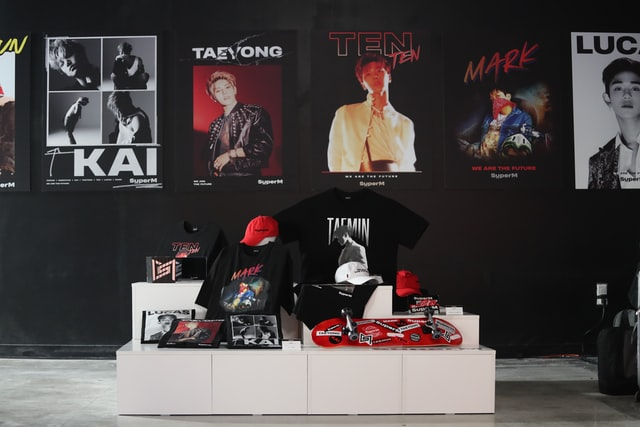

K-pop (Korean: 케이팝; RR: keipap), short for Korean popular music; is a genre of music originating in South Korea as part of South Korean culture It is influenced by styles and genres from around the world, such as pop, experimental, rock, jazz, gospel, hip hop, R&B, reggae, electronic dance, folk, country, and classical on top of its traditional Korean music roots The more modern form of the genre emerged with the formation of one of the earliest K-pop groups, the boy band Seo Taiji and Boys, in 1992. Their experimentation with different styles and genres of music and integration of foreign musical elements helped reshape and modernize South Korea's contemporary music scene
